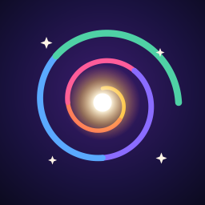

Aeonverse
Universe timeline: 55 moments, from the Big Bang to the end of time
Need help? 👋
Hi, I'm Alex, the developer of Aeonverse. If something isn't working, you spotted a mistake in a fact, or you have an idea, write to me. I read every message.
alexandre.bruffa@gmail.comFrequently asked questions
How do I move through time?
Swipe left to go forward in time and right to go back toward the Big Bang. You can also tap or drag the time ruler at the bottom to jump anywhere. With a keyboard, use the ← → arrow keys; "Home" brings you back to "You are here".
Why do the Big Rip, vacuum decay and the Big Crunch come after heat death?
They aren't later moments: they are other possible endings. Heat death is the most likely end according to today's data; the last three screens show the alternatives, which is why the ruler leaves a small gap before them. After the Big Crunch, you can start the universe again.
What do the badges mean?
Observed: seen directly. Measured: worked out from data. Predicted: what well-tested physics expects. Hypothesis: an idea science hasn't confirmed yet. Other ending: an alternative to heat death.
Is Aeonverse free?
Yes, completely: every screen and feature is free, with no ads. If you enjoy it, you can leave an optional tip from the Support screen (the heart button). Tips don't unlock anything.
I left a tip on a new phone and the app still asks for support
That's normal. Tips are one-time thank-yous and the app only remembers them on the device where you gave them. There is nothing to restore, and nothing in the app is locked.
Where is my data stored?
Aeonverse doesn't collect anything about you. It only remembers a few settings on your device, such as whether you've already seen the swipe hint.